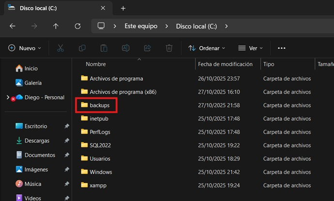

Definición: Una copia de seguridad (backup) es una reproducción consistente del estado de la base de datos en un instante específico, guardada en un medio alterno. Permite recuperar la información ante fallas del sistema, errores humanos o desastres.
¿Cuál es su utilidad?
- Proteger la integridad y disponibilidad de los datos ante incidentes.
- Reducir la pérdida de información (RPO) restaurando hasta un instante definido.
- Disminuir el tiempo de inactividad (RTO) mediante procedimientos de restauración probados.
- Cumplir requisitos normativos y de auditoría.
- Servir como base para estrategias avanzadas de recuperación (DIFFERENTIAL y LOG con PITR).
En esta práctica aprenderás cómo funcionan los distintos tipos de copias de seguridad (backups) en SQL Server. Una buena estrategia combina respaldos FULL, DIFFERENTIAL y LOG según lo que necesites recuperar si ocurre una falla o pérdida de datos.
En esta sección conocerás los principales tipos de respaldo que se pueden realizar en SQL Server para proteger la información de una base de datos. Comprender la diferencia entre respaldo lógico y respaldo físico te permitirá aplicar la estrategia más adecuada según el entorno (laboratorio, desarrollo o producción).
1. Respaldo lógico
Este tipo de respaldo genera un archivo .sql con las instrucciones necesarias para volver a crear tus tablas, datos o procedimientos. Es como “copiar el contenido” de la base en forma de texto legible.
- Se utiliza cuando deseas mover solo algunas tablas o estructuras específicas.
- No conserva los archivos internos ni la cadena de recuperación del log.
- Ideal para ambientes de práctica, pruebas o migraciones pequeñas.
A continuación se presenta un ejemplo de cómo realizar un respaldo lógico en SQL Server:
Importante: Durante los laboratorios, este ha sido el tipo de respaldo utilizado para cargar las bases de datos empleadas en los ejercicios prácticos.
2. Respaldo físico
A diferencia del respaldo lógico, el respaldo físico guarda la base de datos real tal como existe en el disco.
SQL Server crea un archivo con extensión .bak que contiene todas las estructuras, datos y registros necesarios
para restaurar completamente la base de datos en otro momento.
- Se usa en entornos de producción o en sistemas donde es vital mantener la integridad de los datos.
- Permite restaurar la base exactamente como estaba en el momento del respaldo.
- Puede incluir también un archivo del log (
.trn) si se realiza un respaldo del registro de transacciones.
Los archivos principales que conforman una base de datos en SQL Server son:
- MDF (Primary Data File): contiene los datos y objetos principales (tablas, índices, vistas).
- NDF (Secondary Data File): archivos adicionales de datos, usados para distribuir información en distintos discos.
- LDF (Log File): almacena las transacciones realizadas en la base; necesario para auditoría y recuperación.
BACKUP LOG periódicamente para evitar
que el archivo LDF crezca en exceso y consuma todo el espacio del disco.
Un modelo de recuperación define cómo SQL Server administra el registro de transacciones (log) y determina qué tan detallada puede ser una restauración después de una falla. Cada modelo ofrece un nivel distinto de protección y control sobre los datos.
1. Modelo Simple
En este modelo, SQL Server elimina automáticamente los registros del log cuando ya no son necesarios, evitando que el archivo crezca demasiado. Es un modelo sencillo y rápido, pero no permite restaurar la base a un punto exacto en el tiempo.
- No se puede realizar respaldo del log de transacciones.
- Reduce el espacio ocupado por el log, ya que se vacía constantemente.
- Ideal para laboratorios, desarrollo o bases con poca criticidad.
ALTER DATABASE MiBD SET RECOVERY SIMPLE;2. Modelo Full
En el modelo Full, SQL Server registra todas las transacciones y no elimina los registros del log hasta que se haga un respaldo de log. Es el más seguro y completo, ya que permite restaurar la base de datos hasta un instante exacto antes de un error (lo que se conoce como recuperación punto en el tiempo o PITR).
- Permite realizar respaldos FULL, DIFFERENTIAL y LOG.
- Es el modelo recomendado para entornos de producción.
- Requiere programar respaldos de log para evitar que el archivo LDF crezca sin control.
ALTER DATABASE MiBD SET RECOVERY FULL;3. Modelo Bulk-Logged
Este modelo es una combinación entre Simple y Full. SQL Server registra de forma mínima las operaciones masivas (como cargas de datos o reconstrucción de índices) para mejorar el rendimiento durante esas tareas. Sin embargo, durante esas operaciones no se puede restaurar punto a punto.
- Ideal cuando se hacen importaciones grandes o tareas de mantenimiento masivo.
- Guarda suficiente información para mantener la integridad, pero reduce el tamaño del log.
- Después de una carga masiva, conviene volver a modelo FULL y hacer un respaldo completo.
ALTER DATABASE MiBD SET RECOVERY BULK_LOGGED;- Simple: ideal para pruebas o entornos de desarrollo. Sin recuperación detallada.
- Full: el más completo; permite restaurar hasta un punto exacto (PITR).
- Bulk-Logged: útil para cargas masivas o procesos pesados; prioriza velocidad sobre detalle.
En SQL Server existen diferentes tipos de copias de seguridad (backups), cada una con un propósito específico. Combinar adecuadamente estos tipos permite equilibrar el uso de espacio en disco, el tiempo de respaldo y la velocidad de restauración cuando ocurre una falla.
1. Backup FULL (Completo)
Crea una copia total de la base de datos tal como se encuentra en ese momento, incluyendo todos los objetos (tablas, vistas, procedimientos) y parte del registro de transacciones necesarios para recuperarla completamente.
- Es el punto de partida de cualquier estrategia de respaldo.
- Todos los respaldos diferenciales y de log dependen de él.
- Permite restaurar la base completamente desde cero.
Cuándo usarlo:
- Siempre como respaldo inicial o base.
- De forma periódica (diaria o semanal) según la importancia de los datos.
- Antes de actualizaciones, mantenimiento o cambios importantes en el sistema.
BACKUP DATABASE MiBD
TO DISK = 'C:\backups\MiBD_FULL.bak'
WITH INIT, COMPRESSION, STATS = 5;2. Backup DIFFERENTIAL (Diferencial)
Este respaldo guarda únicamente los cambios realizados desde el último respaldo FULL. No copia toda la base, sino solo las páginas modificadas, lo que lo hace más rápido y liviano.
Ventajas:
- Ahorra espacio de almacenamiento y tiempo de ejecución.
- Permite restaurar más rápido, usando solo el último FULL y el último DIF.
Cuándo usarlo:
- Cuando se requiere una recuperación rápida (bajo RTO).
- En bases donde los datos cambian constantemente entre respaldos FULL.
BACKUP DATABASE MiBD
TO DISK = 'C:\backups\MiBD_DIFF.bak'
WITH DIFFERENTIAL, COMPRESSION, STATS = 5;3. Backup LOG (Registro de transacciones)
Este respaldo guarda únicamente el transaction log, es decir, todas las operaciones realizadas desde el último respaldo de log, diferencial o full. Permite recuperar la base hasta un punto exacto en el tiempo antes de un fallo (PITR – Point In Time Recovery).
Ventajas:
- Minimiza la pérdida de datos (bajo RPO).
- Permite restaurar la base justo antes de un error humano o fallo.
- Mantiene activa la cadena de recuperación entre respaldos.
Requisitos:
- El modelo de recuperación debe ser FULL o BULK_LOGGED.
- No funciona en el modelo SIMPLE.
BACKUP LOG MiBD
TO DISK = 'C:\backups\MiBD_LOG_001.trn'
WITH INIT, COMPRESSION, STATS = 5;Un plan de respaldo establece cada cuánto y qué tipo de copia de seguridad se realizará para proteger la información sin afectar el rendimiento del sistema. La meta es lograr un equilibrio entre frecuencia de respaldo, uso de espacio y tiempo de restauración.
A continuación se presenta un ejemplo de agenda recomendada para un entorno académico o de pequeña empresa, donde la carga de trabajo no es tan alta pero se busca mantener la seguridad de los datos.
| Horario / Frecuencia | Tipo de Backup | Propósito |
|---|---|---|
| Domingo 00:00 | FULL semanal | Genera una copia completa de la base de datos. Es el punto base para los demás respaldos. |
| Miércoles 00:00 | DIFFERENTIAL intermedio | Incluye los cambios realizados desde el último FULL. Acelera la restauración sin usar demasiado espacio. |
| Diariamente a las 20:00 | LOG diario | Guarda las transacciones recientes del día, permitiendo restauraciones más precisas sin hacer backups constantes. |
Con este plan, se obtiene un respaldo completo semanal, un respaldo diferencial a mitad de semana, y respaldos de log diarios que complementan la protección de los datos sin sobrecargar el sistema.
- Regla 3-2-1: Mantén tres copias de los datos (producción, local y nube).
- Verifica el espacio: asegúrate de que las carpetas de destino tengan suficiente almacenamiento.
- Usa nombres claros: incluye el tipo de respaldo y la fecha, por ejemplo:
MiBD_DIFF_2025-11-05_0000.bak - Automatiza tareas: programa los respaldos con SQL Agent.
- Pruebas de restauración: realiza una restauración de prueba al menos una vez al mes para comprobar la integridad de los archivos.
En esta sección se simulará un flujo completo de respaldo y recuperación en SQL Server, con el objetivo de observar de forma evidente cómo los diferentes tipos de backups (FULL y DIFFERENTIAL) permiten recuperar los datos después de una pérdida o alteración.
1. Preparación del entorno
Antes de comenzar, asegúrate de que exista una carpeta llamada C:\backups\ en el servidor. Todos los archivos generados durante esta práctica se guardarán en esa ruta.
2. Creación de la base de datos y respaldo FULL inicial
Se creará una base de datos llamada DB_Gimnasio con una tabla sencilla (ref.Cliente)
y se generará el primer respaldo completo (FULL).
Al no especificarse el modelo de recuperación, SQL Server aplica el modelo por defecto
de la base model, que normalmente es FULL.
USE master;
GO
IF DB_ID('DB_Gimnasio') IS NULL
BEGIN
CREATE DATABASE DB_Gimnasio;
END
GO
USE DB_Gimnasio;
GO
IF NOT EXISTS (SELECT 1 FROM sys.schemas WHERE name = 'person')
EXEC('CREATE SCHEMA person');
GO
IF OBJECT_ID('person.Cliente') IS NULL
BEGIN
CREATE TABLE person.Cliente (
Id INT IDENTITY(1,1) PRIMARY KEY,
Nombre NVARCHAR(100) NOT NULL,
DUI CHAR(9) UNIQUE NOT NULL,
Email NVARCHAR(200) NOT NULL
);
INSERT INTO person.Cliente (Nombre, DUI, Email) VALUES
('James','012345670','james@fit.com'),
('Diego','012345671','diego@fit.com'),
('Claudia','012345672','claudia@fit.com'),
('Vanessa','012345673','vanessa@fit.com'),
('Kevin','012345674','kevin@fit.com'),
('Moises','012345675','moises@fit.com'),
('Anthony','012345676','anthony@fit.com');
END
GO
SELECT * FROM person.Cliente ORDER BY Id;Generar el backup FULL inicial:
/****** Realizar Backup FULL ******/
BACKUP DATABASE DB_Gimnasio
TO DISK = 'C:\backups\DBGim_FULL_BASE.bak'
WITH INIT, COMPRESSION, STATS = 5;3. Simular un daño masivo y restaurar con FULL
En este paso se provocará un daño intencional sobre la tabla ref.Cliente
alterando los correos electrónicos, para luego restaurar la base desde el respaldo FULL.
Simular el error intencional:
UPDATE person.Cliente
SET Email = 'email_corrupto', DUI = Id ,Nombre = 'nulo';
SELECT * FROM person.Cliente ORDER BY Id;Restaurar la base desde el respaldo FULL:
/****** Restaurar desde backup FULL ******/
USE master;
ALTER DATABASE DB_Gimnasio SET SINGLE_USER WITH ROLLBACK IMMEDIATE;
RESTORE DATABASE DB_Gimnasio
FROM DISK = 'C:\backups\DBGim_FULL_BASE.bak'
WITH REPLACE, RECOVERY, STATS = 5;
ALTER DATABASE DB_Gimnasio SET MULTI_USER;
GO
USE DB_Gimnasio;
SELECT * FROM person.Cliente ORDER BY Id;4. Backup diferencial y restauración
A continuación, insertaremos nuevos registros, realizaremos un respaldo DIFERENCIAL, modificaremos datos y finalmente restauraremos para ver el cambio.
Insertar nuevos registros:
INSERT INTO person.Cliente (Nombre, DUI, Email) VALUES
('Bryan','012345677','bryan@fit.com'),
('Douglas','012345678','douglas@fit.com'),
('Carlos','012345679','carlos@fit.com'),
('Roberto','012345680','roberto@fit.com'),
('Jose','012345681','jose@fit.com'),
('Andrea','012345682','andrea@fit.com'),
('Violeta','012345683','violeta@fit.com'),
('Samuel','012345684','samuel@fit.com'),
('Luis','012345685','luis@fit.com'),
('Hector','012345686','hector@fit.com'),
('Daniel','012345687','daniel@fit.com'),
('Jeremias','012345688','jeremias@fit.com'),
('Nestor','012345689','nestor@fit.com'),
('Gabriel','012345690','gabriel@fit.com'),
('Reynaldo','012345691','reynaldo@fit.com'),
('Juan','012345692','juan@fit.com'),
('Marcos','012345693','marcos@fit.com'),
('Lourdes','012345694','lourdes@fit.com'),
('Wilber','012345695','wilber@fit.com'),
('Andre','012345696','andre@fit.com'),
('Adriana','012345697','adriana@fit.com'),
('Leonel','012345698','leonel@fit.com'),
('Francisco','012345699','francisco@fit.com'),
('Josue','012345700','josue@fit.com'),
('Michael','012345701','michael@fit.com'),
('Kalet','012345702','kalet@fit.com'),
('Steven','012345703','steven@fit.com');
SELECT * FROM person.Cliente ORDER BY Id DESC;Crear backup diferencial:
/****** Backup diferencial ******/
BACKUP DATABASE DB_Gimnasio
TO DISK = 'C:\backups\DBGim_DIFFinserts.bak'
WITH DIFFERENTIAL, COMPRESSION, STATS = 5;Simular un daño masivo en los datos después del backup diferencial:
UPDATE person.Cliente
SET Email = 'LOL@ALTERADO.COM', DUI = Id
WHERE Id > 6;
SELECT * FROM person.Cliente ORDER BY Id DESC;Restaurar utilizando FULL + DIFFERENTIAL:
Para aplicar correctamente un respaldo diferencial, primero se debe restaurar
el último FULL con la opción NORECOVERY y luego el diferencial con RECOVERY.
/****** Restauración FULL + DIFERENCIAL ******/
USE master;
ALTER DATABASE DB_Gimnasio SET SINGLE_USER WITH ROLLBACK IMMEDIATE;
RESTORE DATABASE DB_Gimnasio
FROM DISK = 'C:\backups\DBGim_FULL_BASE.bak'
WITH NORECOVERY, REPLACE, STATS = 5;
RESTORE DATABASE DB_Gimnasio
FROM DISK = 'C:\backups\DBGim_DIFFinserts.bak'
WITH RECOVERY, STATS = 5;
ALTER DATABASE DB_Gimnasio SET MULTI_USER;
GO
USE DB_Gimnasio;
SELECT * FROM person.Cliente ORDER BY Id DESC;5. Ejemplo final — Backup y restauración de LOG
Finalmente, realizaremos un backup de LOG para capturar las transacciones recientes y luego restaurar la base de datos hasta un punto exacto en el tiempo (Point-In-Time Recovery).
Insertar nuevos datos antes del backup de log:
INSERT INTO person.Cliente (Nombre, DUI, Email) VALUES
('Marlene','012345704','marlene@fit.com'),
('Elisa','012345705','elisa@fit.com'),
('Erick','012345706','erick@fit.com');
SELECT * FROM person.Cliente ORDER BY Id DESC;Generar el respaldo de log:
/****** Backup Log ******/
BACKUP LOG DB_Gimnasio
TO DISK = 'C:\backups\DBGim_LOG_001.trn'
WITH INIT, COMPRESSION, STATS = 5;Simular un error posterior al log:
-- IMPORTANTE ANOTAR LA HORA EXACTA A LA QUE SE REALIZO EL DELETE (en Messages)
DELETE FROM person.Cliente WHERE Nombre IN ('Erick','Marlene','Elisa');
SELECT * FROM person.Cliente ORDER BY Id DESC;Restaurar con FULL + DIF + LOG (punto en el tiempo):
Ahora restauraremos la base usando el último respaldo FULL, el último DIF y el LOG. El parámetro STOPAT permite definir el instante exacto al que queremos recuperar la base.
/****** Restauración FULL + DIF + LOG (PITR) ******/
USE master;
ALTER DATABASE DB_Gimnasio SET SINGLE_USER WITH ROLLBACK IMMEDIATE;
-- Restaurar respaldo FULL
RESTORE DATABASE DB_Gimnasio
FROM DISK = 'C:\backups\DBGim_FULL_BASE.bak'
WITH NORECOVERY, REPLACE;
-- Restaurar respaldo diferencial
RESTORE DATABASE DB_Gimnasio
FROM DISK = 'C:\backups\DBGim_DIFFinserts.bak'
WITH NORECOVERY;
-- Restaurar log hasta antes del DELETE
RESTORE LOG DB_Gimnasio
FROM DISK = 'C:\backups\DBGim_LOG_001.trn'
WITH STOPAT = '2025-11-02T18:56:50', -- unos segundos ANTES del DELETE
RECOVERY, STATS = 5;
-- Ejecuta este comando en caso de que de error (si no falla ignoralo)
RESTORE DATABASE DB_Gimnasio WITH RECOVERY;
ALTER DATABASE DB_Gimnasio SET MULTI_USER;
GO
USE DB_Gimnasio;
SELECT * FROM person.Cliente ORDER BY Id;
En esta sección trabajarás con la base de datos
pubs para aplicar los conceptos de
copias de seguridad y restauración en SQL Server.
Antes de iniciar el ejercicio, asegúrate de cumplir con los siguientes prerrequisitos:
- Tener instalada y accesible la base de datos
pubsen tu instancia de SQL Server. - Contar con permisos para ejecutar comandos BACKUP y RESTORE.
- Haber creado la carpeta C:\backups\ para almacenar los archivos de respaldo.
Importante: Este ejercicio forma parte de la evaluación práctica del laboratorio y debe realizarse individualmente, documentando con capturas cada resultado obtenido.
Departamento de Electrónica e Informática, Universidad Centroamericana José Simeón Cañas, La Libertad, El Salvador.
Versión de este documento: Versión 1, 2025.
| Versión | Autores |
| 1 | Diego Eduardo Castro Quintanilla (00117322@uca.edu.sv) |

This work is licensed under a
Creative Commons Attribution-NonCommercial-ShareAlike 4.0
International License .